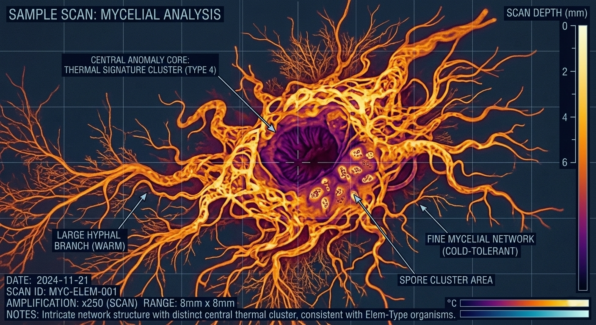
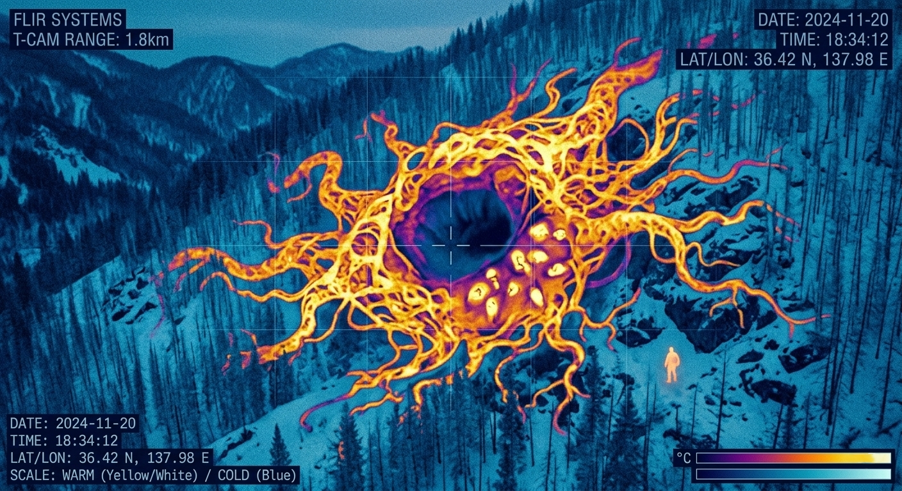
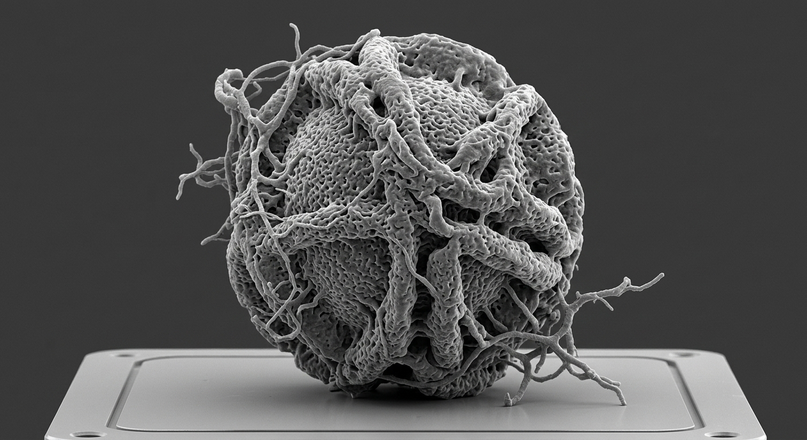
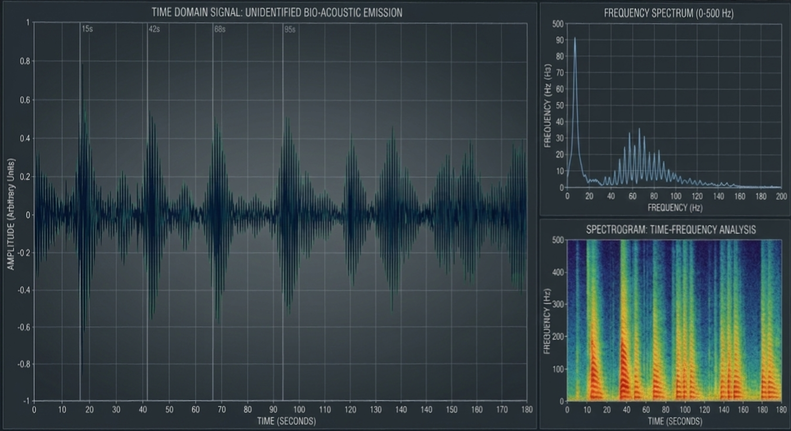

最終報告書：御臥山深部個体観測記録
STRUCTURAL_SCAN

STRUCTURAL ANALYSIS
御臥山地下1,400m地点で観測された中枢核の断層写真。骨格状の組織は石灰化した古い菌糸体であり、中心部には巨大な中枢神経系が確認されている。
THERMAL_MONITOR

THERMAL DISTRIBUTION
周辺岩盤の温度分布。対象の周囲のみ、常に人間の平熱に酷似した摂氏36.5度を維持しており、これは環境適応ではなく個体の大規模な代謝による排熱と思われる。
SPORE_SEM_IMAGE

MYCOLOGICAL DETAIL
クギワラタケから飛散する胞子の10,000倍拡大図。胞子表面には微細な鉤爪状の突起があり、吸入した宿主の脳血流門を突破し、前頭葉への定着を容易にする。
ACOUSTIC_WAVEFORM

GEOLOGICAL RESONANCE
山体深部より発せられる超低周波の解析結果。周期的な山鳴りの発生タイミングと、中枢核の蠕動（ぜんどう）による飢餓反応の波形が完全に一致していることが判明した。
FINAL CONCLUSION / SUMMARY
「オフシ様」という存在は、村人が信じているような神格ではなく、理屈の通じない未確認の超大規模生命体と定義せざるを得ない。我々はこの個体を「山」として観察してきたが、事実は逆であり、山そのものがこの個体の「胃袋」として機能しているのではないだろうか。
最近、山鳴りの頻度が急激に増加している。もしこれが個体の「空腹」を意味しているのだとしたら、これまで供給してきたリソース（観光客等）では、もはや足りなくなってきているのではないか……？ 我々は、一体何を目覚めさせてしまったのだろうか。
―― 主任研究員 佐伯 浩二